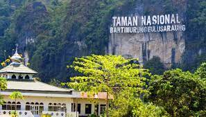

Tugas Ke-4
Nama Lengkap : Nurul Miftahul Pradani
NIM : 202055202036

Deskripsi :
Taman Nasional Bantimurung mulai ditetapkan menjadi wilayah konservasi alam pada tahun 2004 lalu. Taman dengan luas sekitar 43.770 Ha ini terletak di kecamatan Bantimurung, Maros, Sulawesi Selatan.
Lokasi tempat wisata ini berada di Kabupaten Maros dan Pangkep. Taman ini jaraknya tak jauh dari ibu kota provinsi, Makassar.